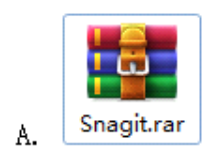
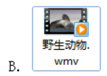
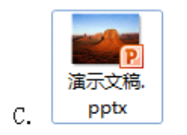
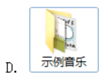

题目导航
Email选择练习
返回主页
当前：第1题 / 共25题
1.小李的电子邮箱经常收到某公司发送的推广邮件，为此他将该公司的邮件地址添加到自己邮箱的黑名单中，下列关于添加黑名单的说法正确的是（）。
A. 小李的邮箱将会屏蔽该公司向他发送的垃圾邮件
B. 小李的邮箱将会屏蔽该公司向他发送的所有邮件
C. 小李将不能回复该公司向他发送的邮件
D. 添加黑名单以后，该公司在给他发送电子邮件时会提示发送失败
解析：1. A错误，邮箱黑名单的屏蔽规则是针对**发件人地址**的全量屏蔽，并非仅屏蔽标注为垃圾邮件的内容，只要是该发件人发送的邮件，都会被屏蔽，而非区分是否为垃圾邮件； 2. B正确，邮箱添加黑名单的核心功能是**对指定发件人地址进行全量拦截**，该发件人后续发送的所有邮件都会被邮箱系统自动拒收、屏蔽，不会进入收件箱，这是黑名单的核心规则； 3. C错误，添加黑名单是**接收端**的拦截操作，仅影响该公司向小李发送邮件的接收，不影响小李主动向该公司的邮箱地址发送/回复邮件，小李可正常编辑并发送邮件至该地址； 4. D错误，黑名单是小李邮箱的**本地/接收端设置**，发件方（该公司）发送邮件时，其邮件服务器会正常发送，不会收到发送失败的提示，仅小李的邮箱会在后台拦截该邮件，发件方无感知。
答题解析
2.在发送电子邮件时，附件中不能添加的是（）。




解析：1. A正确，压缩文件（.rar/.zip等）是电子邮件附件支持的常见文件格式，可将多个文件打包压缩后作为单个附件发送，节省传输空间且方便整理，无添加限制； 2. B正确，视频文件（.wmv/.mp4/.avi等）属于常规的多媒体文件，电子邮箱均支持添加为附件（仅受附件大小上限限制），无格式上的添加限制； 3. C正确，演示文稿文件（.pptx/.ppt等）是办公常用文件格式，是电子邮件附件的高频使用类型，所有主流邮箱均支持添加，无任何限制； 4. D错误，电子邮箱的附件功能**仅支持添加具体的文件**，不支持直接添加文件夹。若需要发送文件夹内的内容，需先将文件夹进行压缩（生成.rar/.zip等压缩文件），再将压缩后的文件作为附件添加发送。
答题解析
3.发送电子邮件时，成功发送的前提是必须知道对方的（）
A. 姓名
B. 电子邮箱地址
C. 手机号
D. 家庭住址
解析：1. A错误，姓名是对收件人的身份标识，电子邮箱系统发送邮件时，无需验证或识别收件人姓名，仅填写姓名不会让邮件送达，姓名可填可不填，并非发送的必要条件； 2. B正确，电子邮箱地址是收件人在网络中的**专属邮件标识**，相当于邮件的“收件地址”，邮件系统会根据填写的电子邮箱地址，将邮件准确投递到对应收件人的邮箱服务器，这是成功发送电子邮件的核心且唯一的必备前提； 3. C错误，手机号与电子邮箱系统无直接关联，仅知道手机号无法完成邮件发送，即便部分邮箱支持手机号绑定，也需通过手机号匹配到对应的电子邮箱地址才能投递，手机号本身并非发送前提； 4. D错误，家庭住址是现实中的物理地址，与网络中的电子邮件投递无关，邮件系统无法通过家庭住址定位到收件人的邮箱，因此家庭住址完全不是发送邮件的必要条件。
答题解析
4.下列选项中，不属于电子邮箱安全使用做法的是（）
A. 定期更换密码
B. 密码设置成简单的数字组合
C. 不随意点击陌生邮件的链接
D. 不向他人泄露邮箱密码
解析：1. A正确，定期更换邮箱密码是重要的安全防护做法，能有效降低密码被破解、盗用后长期被非法使用的风险，提升邮箱账户安全性； 2. B错误，将密码设置成简单的数字组合（如123456、666666等），极易被黑客通过暴力破解、字典攻击等方式获取，会大幅降低邮箱账户的安全等级，属于邮箱使用的不安全操作，而非安全做法； 3. C正确，陌生邮件中的链接可能指向钓鱼网站、病毒木马下载页面，随意点击会导致邮箱账户信息被盗、电脑被植入病毒，不随意点击是防范网络诈骗和病毒攻击的关键安全做法； 4. D正确，邮箱密码是账户的核心登录凭证，向他人泄露密码会直接导致账户失去安全保护，被他人随意登录、查看邮件内容甚至篡改信息，不泄露密码是邮箱安全使用的基础要求。
答题解析
5.当收到陌生的中奖、领奖类电子邮件时，正确的做法是（）
A. 立即点击邮件内的链接填写个人信息
B. 回复邮件询问具体领奖方式
C. 直接删除，不予理会
D. 转发给同学一起查看
解析：1. A错误，陌生中奖领奖邮件内的链接多为钓鱼网站，点击填写个人信息（身份证、银行卡、手机号等）会导致信息被盗取，进而引发财产损失、个人信息泄露等风险，是典型的被骗操作； 2. B错误，回复该类邮件会向诈骗分子确认此邮箱为有效使用地址，后续会收到更多诈骗信息，甚至被诈骗分子针对性跟进诈骗，大幅增加被骗概率； 3. C正确，陌生的无门槛中奖、领奖类电子邮件均为网络诈骗手段，不存在凭空的陌生中奖福利，直接删除、不予理会是从根源规避诈骗风险，保护个人信息和财产安全的正确做法； 4. D错误，将诈骗邮件转发给同学，会让身边人接触到诈骗信息，增加他人的被骗可能，同时造成诈骗信息的传播，是不可取的行为。
答题解析
进入下一题
提交所有答案并查看统计结果
闯关完成！答题统计
总答题数：0题
答对题数：0题
正确率：0%
↑
↓
确定